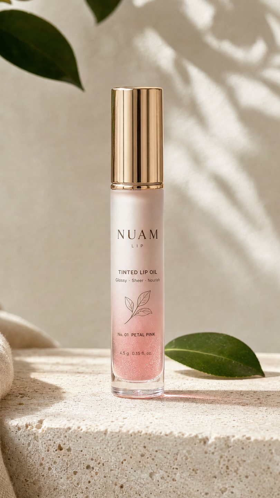
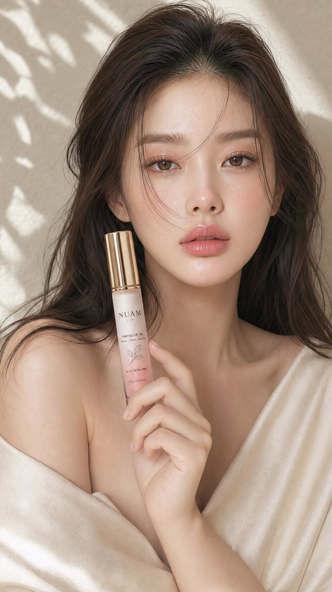

브랜드 홈페이지 · 반려동물 간식
오독 — 벤토 그리드, 원료 이력 공개
가상 브랜드 콘셉트
레퍼런스
가상 브랜드 네 곳을 세우고 홈페이지·상세페이지·로고·카드뉴스·광고 영상을 통째로 만들었습니다. 실제 의뢰도 같은 방식으로 진행합니다.
아래 미리보기는 스크린샷이 아닙니다. 실제 페이지가 이 화면 안에서 그대로 돌아갑니다. 가상 브랜드 작업물이며 실제 고객사 작업물이 아닙니다.
아래 미리보기는 스크린샷이 아니라 실제 페이지를 그대로 축소한 것입니다. 눌러서 바로 열어 보실 수 있습니다.
브랜드 홈페이지 · 반려동물 간식
오독 — 벤토 그리드, 원료 이력 공개
가상 브랜드 콘셉트
브랜드 홈페이지 · 생활용품
뽀득 — 스위스 그리드, 전 성분 공개
가상 브랜드 콘셉트
자사 홈페이지 · 7페이지
your wings — 기획부터 배포까지 자체 제작
같은 회사가 만들었지만 레이아웃·타이포·전환 구조를 페이지마다 다르게 잡습니다. 업종과 파는 방식이 다르면 같은 틀을 쓰지 않습니다.

로고는 그림 한 장이 아니라 규칙입니다. 마크·워드마크·서브라인·팔레트를 한 판에 같이 정해서 어디에 놓여도 같은 인상이 나오게 만듭니다.
로고 · 브랜드 시스템
누암 NUAM — 스킨케어
물방울과 원이 겹치는 단선 마크. 무채색 4색 팔레트에 얇은 자간으로 벌린 워드마크.
가상 브랜드 콘셉트
로고 · 브랜드 시스템
오독 — 반려동물 수제간식
꼬리가 하트로 감기는 한 줄 강아지 마크. 한글을 주 워드마크로 두고 영문은 서브라인.
가상 브랜드 콘셉트
로고 · 브랜드 시스템
뽀득 — 생활용품
둥근 사각 안에 물방울. 주방·세탁·유아까지 한 라인으로 묶이는 구조.
가상 브랜드 콘셉트
로고 · 브랜드 시스템
민탭 MINTAB — 고체치약
알약 원에 잎 노치를 파낸 단일 도형. 딥 티일 한 색으로 정리.
가상 브랜드 콘셉트

인스타그램 캐러셀 규격(1080×1350)입니다. 옆으로 밀어서 보세요. 글자가 들어가는 작업은 AI 이미지 생성으로 만들지 않고 직접 조판합니다 — 그래야 한글이 깨지지 않고, 수치나 문구를 나중에 고칠 수 있습니다.
원료 이력과 급여량을 정보형으로 정리했습니다. 크림 지면에 사진을 위, 글을 아래로 받쳤습니다.


문제·방법·결과 3단계로 끊었습니다. 짙은 틸 지면에 큰 숫자를 왼쪽에 세운 스위스 그리드입니다.


30초 브랜드 필름부터 패션 룩북, UGC, 제품이 직접 말하는 애니메이션, 캐릭터 숏폼까지 전부 있습니다. 보고 계신 화면 가운데 것부터 재생되고, 소리는 한 번에 하나만 켜집니다.
30초를 한 편으로 끌고 가는 영상입니다. 한 컷짜리 제품 광고와 달리 이야기가 시작하고 끝나야 하므로, 구성부터 음악까지 전부 저희가 짭니다.
음료 광고 · 30초
TOK 톡톡 — 무채색 도시에 색이 번지고, 마지막에 캔이 선다
가상 브랜드 콘셉트
자사 브랜드 필름 · 33초
your wings — 먹으로 그리다가 꽃이 피고 이름이 남는다
한 편에 착장 서너 벌이 이어집니다. 업종이 달라지면 조명과 장소가 통째로 바뀌어야 하므로, 아래 여덟 편은 일부러 서로 겹치지 않게 골랐습니다. 촬영도 모델 섭외도 하지 않았습니다.
데일리 · 15초
카페 거리 — 봄 원피스에서 데님까지
가상 브랜드 콘셉트
오피스 · 15초
사무 공간 — 슬랙스·실크 스커트·레더 재킷
가상 브랜드 콘셉트
웨딩 · 15초
정원 웨딩 — 베일부터 드레스 네 벌
가상 브랜드 콘셉트
한복 · 15초
한옥 — 전통 한복과 가야금
가상 브랜드 콘셉트
애슬레저 · 15초
헬스장 — 운동복에서 라커룸 착장까지
가상 브랜드 콘셉트
클럽 · 15초
네온과 레이저 — 미니드레스에서 레더까지
가상 브랜드 콘셉트
이브닝 · 15초
파리 루프탑 — 해질녘에서 야경까지
가상 브랜드 콘셉트
리조트 · 15초
해변 — 수영복과 비치 커버업
가상 브랜드 콘셉트
앞의 기본 3종을 만든 같은 브랜드에서 신제품 하나가 나왔을 때를 가정했습니다. 누암 틴티드 립오일 한 품목으로, 크리에이터가 직접 찍어 올린 것처럼 보이는 광고를 라이브 톤, 친구에게 말하는 톤, 발색 클로즈업, 제품컷까지 결을 바꿔가며 만듭니다. 모델 섭외도 촬영도 하지 않았습니다.

제품컷
누암 틴티드 립오일 · No.01 Petal Pink
가상 브랜드 콘셉트

모델컷
아래 광고 다섯 편이 이 제품 하나로 만들어졌습니다
가상 브랜드 콘셉트
UGC · 15초
라이브 방송 톤 — “이게 문의가 진짜 많았던 립인데요”
가상 브랜드 콘셉트
UGC · 15초
친구에게 말하듯 — 거울 없이 바르는 장면 그대로
가상 브랜드 콘셉트
UGC · 15초
발색 클로즈업 — 맨입술에서 바르기까지 한 컷
가상 브랜드 콘셉트
제품컷 · 15초
햇빛과 그림자만으로 — 누암 틴티드 립오일
가상 브랜드 콘셉트
히어로컷 · 5초
모델 한 컷 — 제품을 쥔 손까지 같은 톤으로
가상 브랜드 콘셉트
제품 컷을 첫 프레임으로 써서 이어 붙인 실사 광고입니다. 모델 섭외도 촬영 스튜디오도 쓰지 않았습니다.
실사 광고 · 10초
누암 배리어 세럼 — “저녁 세 단계를 한 겹으로 줄였습니다”
가상 브랜드 콘셉트
실사 광고 · 10초
누암 배리어 크림 — “마지막 한 겹으로 수분이 날아가는 속도를 늦춥니다”
가상 브랜드 콘셉트
실사 광고 · 10초
뽀득 주방세제 — “기름때는 바로, 헹굼은 두 번”
가상 브랜드 콘셉트
실사 광고 · 10초
오독 닭가슴살 큐브 — “원료는 세 가지, 그게 전부입니다”
가상 브랜드 콘셉트
제품을 화자로 세운 10초짜리 사물 애니메이션 다섯 편입니다.
사물 애니메이션 · 10초
주방세제 — “한 번만 눌러도 기름때가 바로 지워집니다”
가상 브랜드 콘셉트
사물 애니메이션 · 10초
선크림 — “백탁 없이 그대로 스며듭니다”
가상 브랜드 콘셉트
사물 애니메이션 · 10초
립밤 — “한 번 바르면 반나절은 갑니다”
가상 브랜드 콘셉트
사물 애니메이션 · 10초
고체치약 — “하나만 씹으면 양치 끝입니다”
가상 브랜드 콘셉트
사물 애니메이션 · 10초
섬유유연제 — “사흘이 지나도 향이 그대로예요”
가상 브랜드 콘셉트
동물 캐릭터 두 편과 ASMR 먹방 세 편입니다. 브금 없이 목소리와 먹는 소리만 남깁니다. 자체 AI 모델을 써서 모델 섭외 없이 만듭니다.
동물 캐릭터 · 10초
강아지 — “읽기 어려운 이름은 하나도 없어요”
가상 브랜드 콘셉트
동물 캐릭터 · 10초
고양이 — “저희는 원래 아무거나 안 먹거든요”
가상 브랜드 콘셉트
ASMR 먹방 · 15초
양념치킨 — “이거 이번에 새로 나온 건데 진짜 맛있대요”
ASMR 먹방 · 15초
마라탕 — “진짜 매운데 계속 땡기는 맛이에요”
ASMR 먹방 · 15초
생크림 케이크 — “한 조각으로는 안 되겠는데요”
위 결과물은 실제 고객 작업이 아니라 자사가 직접 만든 샘플입니다. 실제 고객사 작업물이 아닙니다.
여기까지 보셨다면
위의 결과물은 고객사 없이 저희가 직접 브랜드를 세워 만든 것입니다. 이름을 짓고, 로고를 그리고, 화면과 영상을 만드는 순서를 그대로 당신의 브랜드에 옮깁니다.
작업 범위가 정해지고 자료가 준비되면 첫 결과물은 3일 안에 드립니다. 시안은 3개, 수정은 2회 포함입니다.
프로젝트 120만 원부터 · 채널 운영 월 200만 원부터 · 프로젝트 규모에 따라 견적이 달라집니다 · 무료 상담 후 안내